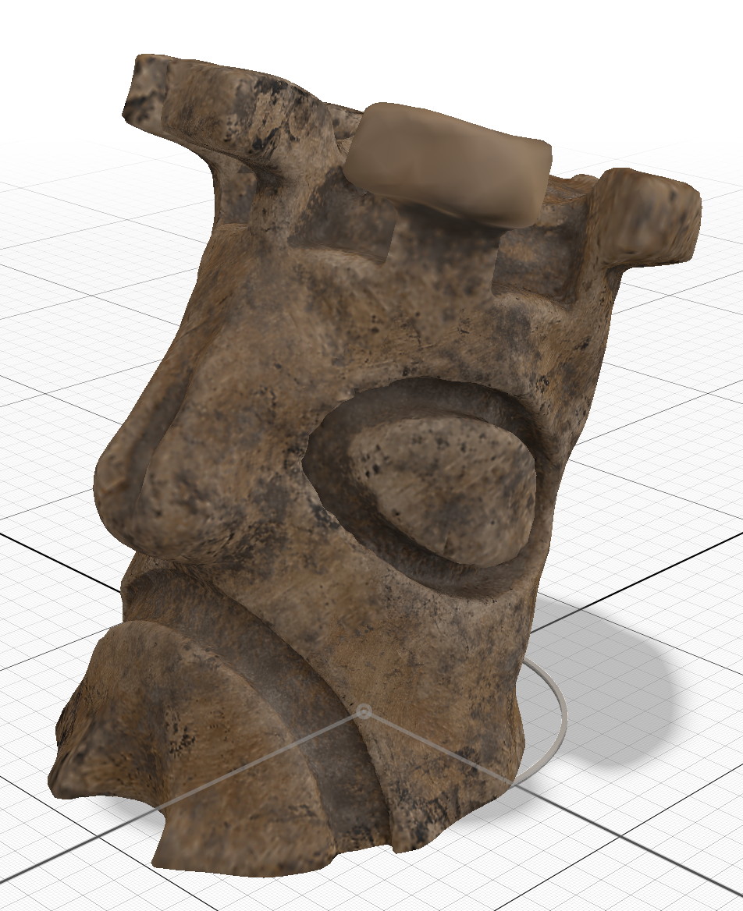

Testing the <model-viewer> tag.
Here's a picture of a tiki in Aero

And here's a 3D model of a tiki. Tap the button to view it in AR.
This is all it takes to embed the 3D model in a webpage:
<script type="module" src="https://unpkg.com/@google/model-viewer/dist/model-viewer.min.js"></script> <model-viewer src="models/Tiki.glb" alt="Stone Tiki" ar ar-modes="webxr scene-viewer quick-look" environment-image="neutral" auto-rotate camera-controls></model-viewer>